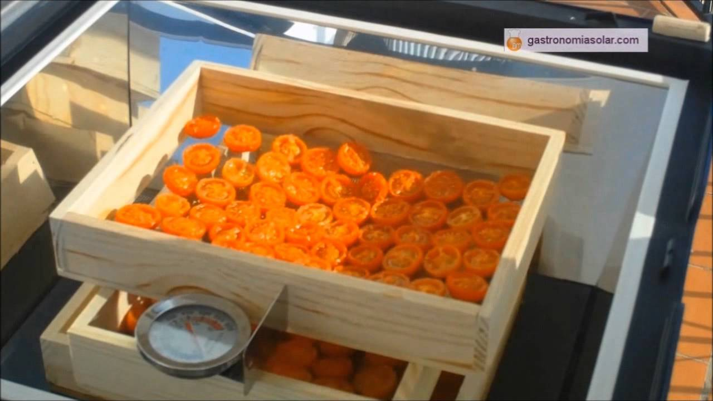

Latest News
- February 15, 2010
- Sed ut perspiciatis unde omnis iste natus error sit voluptatem accusantium.
- January 31, 2010
- Totam rem aperiam, eaque ipsa quae ab illo inventore veritatis et quasi architecto beatae.
- January 22, 2010
- Nemo enim ipsam voluptatem quia voluptas sit aspernatur aut odit aut fugitd quia. 
PLANTEAMIENTO DEL PROBLEMA
La deshidratación en productos agrícolas ha tomado un gran impulso en el campo del mercado ya que su principal actividad recae en aprovechar la producción al máximo sin causar una perdida en la producción, la cual causa una baja en la economía del productor, así mismo se planea establecer mediante este método diversas técnicas para el aprovechamiento humano y agrícola que sean apropiadas a las condiciones de las zonas rurales y marginadas de la región. Los principales productos que tiene más pérdidas son las fresas, manzanas, naranja, mandarina y pera, enfocándonos en el campo de los invernaderos la producción del tomate ha generado muchas pérdidas.
El Instituto Tecnológico Superior de San Miguel el Grande cuenta con invernaderos en los cuales los alumnos de las carreras de Ingeniería en Desarrollo Comunitario e Innovación Agrícola Sustentable cultivan productos hortofrutícolas tales como: fresas (fragaria) y tomates (solanum lycopersicum). Se han presentado pérdidas de ganancias al ocurrir una descomposición de dichos productos es ahí donde la deshidratación de productos funge con su actividad para evitar las pérdidas de producto y así mismo generar las óptimas condiciones en algunas frutas y hortalizas para garantizar un correcto proceso de secado guardando las principales propiedades nutrimentales de los productos además de conservar los alimentos por más tiempo, asegura la calidad de la alimentación, genera trabajo y ofrecer una alternativa productiva comercial para el mercado.MISIÓN
VISIÓN
VALORES
Devoción
Compromiso.
Estabilidad.
Conexión y sociabilidad.
Constancia del descubrimiento de nuevas prácticas.
Entrega total para el desarrollo de los objetivos.
OBJETIVOS
OBJETIVO GENERAL
Adaptar un deshidratador hortofrutícola por medio del control de sensores de humedad y temperatura relativa que no genere contaminantes como los secadores convencionales y por tanto sea amigable con el ambiente.OBJETIVOS ESPECÍFICOS
Modificar el deshidratador con características propias adaptándolo a las necesidades de la población.
Construir un método de control y tipo de controlador, teniendo en cuenta las variables de proceso (humedad relativa y temperatura).
Evaluación y seguimiento de control del nivel desempeño del prototipo.
METAS
METAS A CORTO PLAZO
Establecer el proyecto además de las técnicas necesarias, los asesoramientos y las bases para adquirir conocimientos acerca del producto y las técnicas que se emplean en el método de la deshidratación.METAS A MEDIANO PLAZO
Realizar la construcción del prototipo de acuerdo a las necesidades del medio donde se va a adaptar para contribuir a los alcances de los objetivos específicos establecidos en el proyecto para la ejecución del mismo de manera exitosa.METAS A LARGO PLAZO
Concluir de manera exitosa el proyecto llevando a un nivel de avance al campo de la agricultura además de crear métodos o estrategias alternas para el implemento en la sociedad generando un mayor aprovechamiento de los productos.ESTRATEGIAS
Análisis de la problemática y establecer posible solución.
Conocimientos previos de la construcción del prototipo.
Asesoramiento sobre las técnicas de deshidratación de los productos.
Desarrollo del prototipo (Elaboración del deshidratador).
Difusión del proyecto con alumnos de otras carreras.
Crear estrategias de mercadotecnia para la venta del producto.
Implementar el servicio de comercio web para el conocimiento del producto.